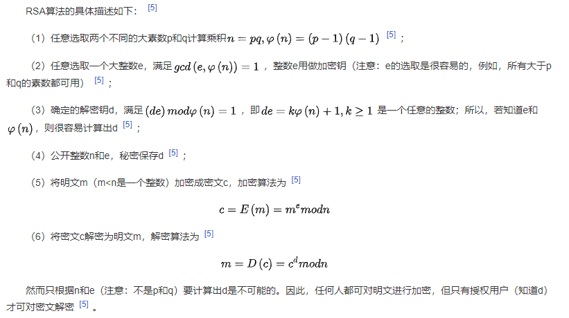

一、简介
1977年，三位数学家Rivest、Shamir 和 Adleman 设计了一种算法，可以实现非对称加密。这种算法用他们三个人的名字命名，叫做RSA算法
RSA通途：
1、用于加密（公钥加密、私钥解密），而且主要用于加密对称密钥，因为RSA加解密较慢。
2、用于数字签名。私钥签名，公钥签名验证
二、算法原理
RSA公开密钥密码体制的原理是：根据数论，寻求两个大素数比较简单，而将它们的乘积进行因式分解却极其困难，因此可以将乘积公开作为加密密钥。
三、算法描述

四、python实现RSA算法
class RSA_COMMON(object):
rsa_id = ""
rsa_public = ""
def __init__(self):
text = self.read_key(config.public_path)
RSA_COMMON.rsa_public = text
def encryption(self, text: str):
#公钥
public_key = RSA_COMMON.rsa_public
# 字符串指定编码（转为bytes）
text = text.encode('utf-8')
# 构建公钥对象
cipher_public = PKCS1_v1_5.new(RSA.importKey(public_key))
# 加密（bytes）
text_encrypted = cipher_public.encrypt(text)
return text_encrypted
def decryption(self, text:bytes):
#私钥
private_key = self.read_key(config.private_path)
# 构建私钥对象
cipher_private = PKCS1_v1_5.new(RSA.importKey(private_key))
# 解密（bytes）
text_decrypted = cipher_private.decrypt(text, Random.new().read)
# 解码为字符串
text_decrypted = text_decrypted.decode()
return text_decrypted
def read_key(self, pem_path) -> bytes:
with open(pem_path, "rb") as x:
b = x.read()
return b